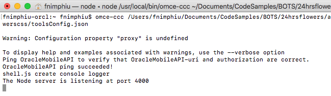
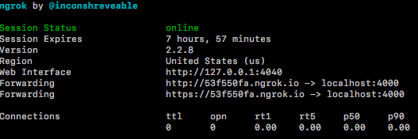
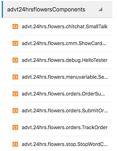
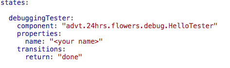
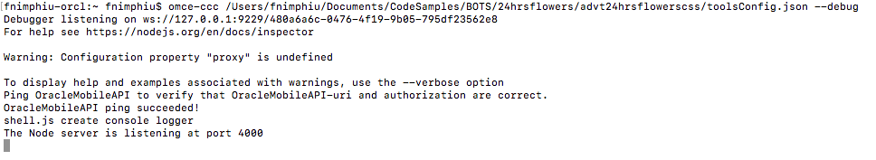
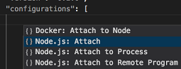
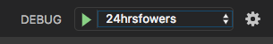
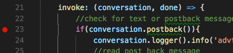

Oracle Intelligent Bots Advanced Training - Lab 5a (Custom Component Debugging)
Oracle Intelligent Bots Advanced Training - Lab 5a (Custom Component Debugging)This is the first in a series of three labs where we'll develop and debug custom components to address particular requirements of our bot.
We'll take a deep dive into the following kinds of components:
- Custom components, which enable you to execute custom logic and integrate with backend systems. Custom components take the form of custom APIs that are implemented with Node.js code. Custom components live outside of your bot, and are accessed through a custom code service that you register in your bot.
- Custom components based on the Conversation Message Model (CMM), in which you code the components in JavaScript using some helper classes provided by the Bots Custom Code SDK. We'll cover CMM components in Lab 5c.
In this lab, we'll kick off our exploration of custom components by setting up some custom components and a local debugging environment for them. Specifically, we'll:
- Create a custom component service starter project in AMCe.
- Configure the custom component service for local development and debugging, using ngrok and the AMCe Custom Code Test Tools.
With local debugging of custom component services, we'll get early and immediate feedback about problems in our custom component code as well as get access to more verbose error messages that shorten the time needed to root out problems. And, by using an actual IDE debugger, we can look into the status of variables without printing them in log statements.
 Prerequisites
Prerequisites
- Any JavaScript IDE that supports Node.js debugging.
The screenshots in this tutorial happen to be from Microsoft Visual Studio Code.
- ngrok
Note: To get past security warnings, you may need to open this link in a private window (Firefox) or icognito window (Chrome).
To develop and debug custom component services locally, you need to set up your machine so that Oracle Intelligent Bots can communicate with the local copy of your custom component service. To facilitate this you'll use ngrok to expose your local machine to the Internet through secure tunnels.
Important: Before using ngrok, ensure you read up on what it is and what it does (https://ngrok.com/ to understand how it works and the possible risks. Be sure to adhere to your company security policies.
For this lab, the free ngrok offering will suffice.
- The AMCe Custom Code Test Tools v18.1.1.0, which you can download from .
- Administration privileges on your local machine
This may be necessary for some of the Node scripts in this lab to work.
 Create and Expose a Custom Component Service
Create and Expose a Custom Component Service
Using AMCe, a custom component service is created as a custom API. To make the custom component service accessible for bots, you need to expose it in a backend.
- Open the main menu by clicking
 and select Development > APIs.
and select Development > APIs. - Click + New API and select API.
- In the New API dialog, click the Upload a RAML document link, navigate to the
resourcefolder for this hands-on and select theadvt24hrsflowerscss.ramlfile. - Change the API Display Name to advt24hrsflowerscss<YourUniqueInitials>.
- Enter a short description.
It can be something like "24hrsflowers custom component service for <YourName>".
- Click Create.
- In the API Designer, select the Security tab and switch OFF Login Required.
- Click Save.
- Select the Implementation tab and click the JavaScript Scaffold button, and save the scaffold to your system.
- Click and select Development > Backends.
- Click + New Backend, enter
advt24hrsflowers<YourInitials>as the name and click Create. - Within the opened backend (not the main menu), click the APIs tab.
- Click Select APIs.
- Click the plus (+) icon in the tile for OracleMobileAPI. (Your AMCe instance has been pre-populated with this API.)
- Click the plus (+) icon in the tile for advt24hrsflowerscss API that has your initials appended.
Tip: Type your initials into the Filter field to get to your artifacts faster.
What We Just Did
- Using a pre-populated RAML file, created a custom API to serve as a custom component service.
- Created a backend to expose the custom API.
- (In addition to the API for the custom component service), added the
OracleMobileAPIAPI to the backend.OracleMobileAPIis an API that serves as a proxy for the local debugging.
 Add the Custom Component Service Implementation
Add the Custom Component Service Implementation
In this section, we'll create an implementation for the custom component service.
- On your system, find the JavaScript scaffold you downloaded and unzip it into a convenient folder.
- Navigate to this lab's
resourcesfolder, copy thejsfolder and paste it into the folder for your scaffold. - Back in the
resourcesfolder for this lab, open theadvt24hrsflowerscss.jsfile and copy its content to the clipboard. - In the scaffold, open the
advt24hrsflowerscss<YourUniqueInitials>.jsfile in a text editor, delete its contents, and paste in the contents of your clipboard. - In the top part of the file, locate the
const apiURL =declaration. - Change the following line:
var shell = require('./shell')();to:
var shell = require('./js/shell')(); - In its value, append your initials to
advt24hrsflowerscssso that it matches the name of your API. - Save and close the file.
- In the same folder, open the
package.jsonfile in a text editor. - After this line:
"main" : "advt24hrsflowerscss<YourUniqueInitials>.js"
Add the following entry:
"dependencies": { "joi": "^9.2.0", "moment": "^2.16.0" },, - Save the file and close it.
- Open a command line window and navigate to the unzipped project folder (so that you are in the directory that contains
package.json. - Type:
npm -v
If the Node package manager is installed correctly then it should print the version number.
If the command does not work, make sure npm was installed and that it is globally accessible.
- With npm working, now type:
npm install
- After the Node dependencies are installed, close the command line window.
- In your file explorer, go to the folder containing the service (something like
advt24hrsflowerscssPK) and create a zip of it. - Back in AMCe, select Development > APIs.
- Select the custom API which you created earlier.
- Click Open and then click the Implementation tab.
- Click the Upload an implementation archive link and upload the zip that you just created.
- Click the Test button (on the right upper side of the window).
- Make sure the GET metadata item is selected.
- As the Backend field value, select your backend name (
advt24hrsflowers<YourUniqueInitials>) and leave the version at1.0. - In the Authentication Method field, select Current User.
- Click the Test Endpoint button.
You should see an HTTP 200 response.
What We Just Did
We turned a custom API into a custom component service by:
- Adding the
jsfolder that contains the starter custom components and the Oracle Intelligent Bots custom component SDK (which containssdk.js,shell.js,registry.jsandMessageModel.js) to the implementation. - Editing the main file with the content from
advt24hrsflowerscss.jsto configure it to become the component service implementation. - Updating the dependencies in the
package.jsonfile.
If the uploading of the implementation and the testing of the API in AMCe were successful, then you are good to continue.
Troubleshooting
The most common problems originate from:
- Misconfiguration, e.g. forgetting to edit the
package.jsonfile. - Missing resource files, e.g. forgetting to call
npm installfrom the command line. - Not updating the
requirestatement inadvt24hrsflowerscss<YourUniqueInitials>.jsto:var shell = require('./js/shell')();
 Configure Local Debugging
Configure Local Debugging
In this part of the lab, we'll configure the AMCe custom code test tools for local testing and deployment.
Tip: This is a good time to open the custom component service folder in a JavaScript IDE. You can also use a plain text editor, but it won't be fun.
- Open a browser and navigate to the AMCe Downloads page on OTN.
- Select the Accept License Agreement radio button.
- Scroll down to the Tools category.
- Click on the link for the Custom Code Test Tools to download them.
- Unzip the downloaded file.
After unzipping the file, you'll see these folders:
omce-tools- the command-line tools themselves.OracleMobileAPI- a custom API that acts as a proxy to AMCe platform APIs, custom APIs, and connectors. To use the custom code tools, you would normally need to upload this API to your instance and associate your backend with it. For this training, this API is already set up in your instance (and you have already associated it with your backend).
- Open a command line window and navigate into the
omce-toolsdirectory. - To install the dependencies, run:
npm install -g
This may take a few minutes to complete.
If the installation fails, see the Troubleshooting section below.
- Verify the installation succeeded by typing the following in the command line:
omce-test --version
Now we're going to configure the toolsConfig.json file in the custom component project.
- In AMCe, click and select Development > Backends.
- Open your backend (
advt24hrsflowerscss<YourUniqueInitials>) and select the Settings tab. - In your project, navigate to the
advt24hrsflowerscss<YourUniqueInitials>folder and opentoolsConfig.jsonin a text editor. - Edit the file, filling in the following with values that you get from the backend's Settings page:
backendIdbackendNamebackendVersionanonymousKeyclientIdclientSecret
- Save the file.
Troubleshooting npm install -g
If you are unable to get the npm install to complete, here are some things to explore:
- If you are on a Mac, global installation might fail as you need admin privileges for it to work. If that's the case, try:
sudo npm install -g
- If you are on VPN, trying disabling it temporarily so that you can run the command with direct Internet access.
- If you are within a corporate network that uses proxies to the Internet, try exporting the proxies using the following commands:
export http_proxy=http://<your¬_proxy:your_port> export https_proxy= http(s)://<your_proxy:your_port>
 Start the Local Container
Start the Local Container
When the Oracle Mobile Cloud custom code test tools are run, a local Node container calls into AMCe for all dependencies the custom component service has. So first we'll need to make sure it can contact AMCe.
- Open a command-line window.
- Run the
omce-ccc tools.config.jsoncommand:omce-ccc <path to your custom component service toolsConfig.json file>/toolsConfig.json
Upon success, you'll see a response similar to the one shown in the image below (depending on whether you are going through a proxy).

With this we know that the container is set up and ready for performing local debugging of a custom component service that has an AMCe dependency. In the case of this lab, we'll be using the mobile client SDK for logging and writing content to a storage collection.
 Start ngrok
Start ngrok
AMCe is accessible from the Internet. That is probably not the case for your laptop. So to make the local custom component service accessible to AMCe, you'll need to use a secure tunnel for it. Ngrok is the most widely used solution for this.
- If you haven't done so already, install ngrok.
- At the command line, navigate to the folder where you installed ngrok and type the following command:
./ngrok http 4000
On Windows, you'd type:
ngrok http 4000
You should see a result similar to the following:

Note: With every re-start of ngrok, it creates a new host URL, which is something to keep in mind when configuring a local custom component service in AMCe.
 Configure the Local Component Service in Oracle Intelligent Bots
Configure the Local Component Service in Oracle Intelligent Bots
For local debugging to work, you need to configure your bot project to access the custom component service through the ngrok URL.
- Open the main menu by clicking and select Development > Bots.
- Within the tile for the
advt24hrsflowers_bot5bot, click , select Clone, and name the clone
, select Clone, and name the clone advt24hrsflowers_bot5<YourInitials>. For example:advt24hrsflowers_bot5JS. - Locate the tile for your clone of the bot (using the Search field might help) and click it to open the bot.
- Click
 in the left navigation for the bot.
in the left navigation for the bot. - Click + Service.
- Fill in the Create Service dialog with the following values:
- Name:
advt24hrsflowersComponents - Backend ID: the backend ID for the
advt24hrsflowers<YourUniqueInitials>backend that you created. You can get this value from the backend's Settings page (or from yourtoolsConfig.jsonfile). - Metadata URL: the ngrok https URL +
/mobile/custom/advt24hrsflowerscss<YourUniqueInitials>/componentsThis is the URL that will be used to access your component service.
The value should look something like this:
https://53f550fa.ngrok.io/mobile/custom/advt24hrsflowerscssFN/components
- Use Anonymous Key: (selected)
- Anonymous Key:
<the anonymous key for your backend>(Tip: It might be easiest to retrieve this from yourtoolsConfig.jsonfile.)
- Name:
- Click Create.
Upon success, you should see a message with a green background.
- Expand the
advt24hrsflowersComponentsservice to see the custom components in your project. Some of the components you see are ready for use. Others are the starting point for ensuing labs.
Now, as a shortcut, let's add a tester custom component to the dialog flow and short-circuit the rest of the dialog flow by adding the return statement.
- Click on the
advt.24hrs.flowers.debug.HelloTestercomponent to see its input argument. - Switch to the dialog flow editor by clicking
 .
. - Create a new line right under the
statesproperty and add the following code:debuggingTester component: "advt.24hrs.flowers.debug.HelloTester" properties: name: "<your name>" transitions: return: "done"The code should be look like the following:
 - Click the Validate link to ensure the configuration is correct.
- In the tester (
 ), type
), type Hito test the component.
What We Just Did
- Configured our AMCe bot to access the local component service.
- Added a tester custom component to the dialog flow.
 Debug in Visual Studio Code
Debug in Visual Studio Code
Finally, it's time to try some debugging. As mentioned earlier, the choice of IDE to use is yours. However, in this lab opted for MS Visual Studio Code.
- Go to the terminal window in which you executed the
omce-ccc <path to toolsConfig>command in. - Stop the process by pressing
Ctrl-c(Windows) orOption-c(Mac). - Restart the container with the following command:
omce-ccc >path to your custom component service toolsConfig.json file>/toolsConfig.json --debug
Issue the command in a single line and make sure you use two hypens (--) in front of
debugandinspect.When the command completes, the debugger starts on the local host with the default debugging port. You should see a message similar to this:
 - Open the custom component service project
advt24hrsflowerscss<YourUniqueInitials>.jsin your IDE. - Expand the
js/components/debugfolder. - Open the
Hello24hrsFlowers.jsfile. - Switch to the IDE's debug view.
In Visual Studio Code, you click .
- (If you're using Visual Studio Code) Open the list field next to the
Debugstring on the top-left header and select Add Configuration, and then select Node.js : Attach as shown below.

Note: If this is the first time you have created a configuration, you may have to select an option to enable Node debugging.
- To make the configuration easier to find, let's change its name from "attach" to "24hrsflowers".

- From the select list next to Debug, select 24hrsflowers.
 - Click the green run icon to start the debugging process.
- In the
Hello24hrsFlowers.jsfile, set a break point beneath theinvoke(conversation, done)function.
 - Go back to your bot and run the tester gain by typing
hi.The bot should stop at the breakpoint for you to inspect and debug the call.
- Spend 5 – 10 minutes playing with the debugger and the information it shows.
It will become a good friend in the following part of this lab.
Housekeeping
So that the bot is ready for use in the next part of this lab, remove or comment out the following code from your dialog flow:
debuggingTester:
component: "advt.24hrs.flowers.debug.HelloTester"
properties:
name: ""
transitions:
return: "done"
Important: You may need to restart your Oracle Mobile Cloud local container for changes to take effect. Use Ctrl-c (Windows) or Option-c (Mac) to stop the process and then issue the omce-ccc --debug command to start it up again for debugging.
What We Just Did
We set ourselves up to do local development and debugging for custom component services.
We will use this setup in the following parts of this lab so that we can build and test our components locally. After the last custom component is ready, we will upload the custom component service back into AMCe and configure our bot to use it from there.